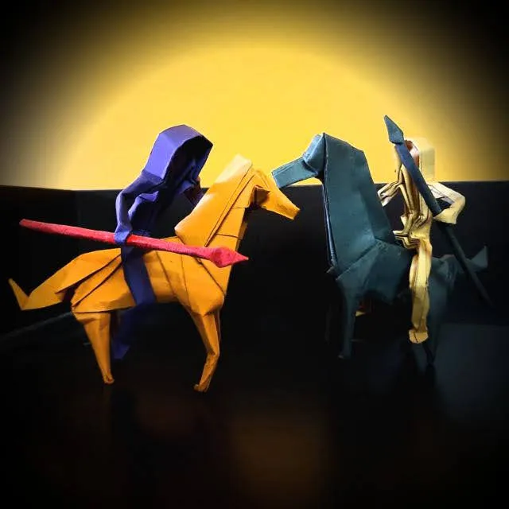

IIT Madras · 3X Hackathon Winner · CGPA 9.02

Core Philosophy
I am a third-year undergraduate student in the IIT Madras BS program in Data Science. I approach artificial intelligence from first principles, specializing in low-level system design beneath high-level abstractions.
My exploration spans building neural architectures from scratch to studying behavioral psychometrics, analyzing patterns in cognitive load optimization and predictive modeling interfaces.
01 / Engineering Frameworks
Socratic Study Engine deploying Bayesian Knowledge Tracing loops, prerequisite DAG structures, and continuous metacognitive optimization agents.
Review Codebase ↗Multi-agent deployment computing structural compatibility balances and simulated performance matrices from behavioral activity vectors.
Launch Simulator ↗02 / Research & Analytics
An ecological evaluation analyzing post-wildfire vegetative recovery anomalies mapping spectral indices like NDVI and NBR.
Analyzing flight/dwell timing signatures as continuous identifiers to discover underlying shifts in user cognitive states.
Processing regional delivery trends using GeoPandas, designing localized density heatmaps and network routing efficiency maps.
03 / Technical Writing & Journal
An architectural breakdown of self-attention engines within modern transformers, mapping mathematical sequence weights.
Documenting from-scratch implementation loops inside browser rendering canvases integrating custom LaTeX math compilers.
Structuring non-traditional team balance matrix models combining engineering sentiment signals with chronological cycles.
04 / Credentials & Architecture
05 / Honors & Awards
Secured 2nd Runner Up standing globally in the Spring 2026 Hackathon loop for structural LLM application design.
Awarded top engineering platform prize across institutional rapid-prototyping tracks.
Awarded structural podium placement inside the competitive technical computing showcase arena.